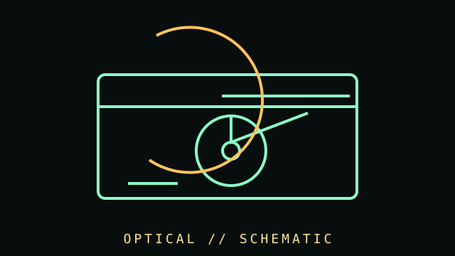

[ SUBCATEGORY DIRECTORY // 9 FILES // 223 PART RECORDS ]
Browse optical drives subcategories
Each distinct subcategory HTML file contains the individual models assigned to it. Every model has a dedicated record and a backlink to its subcategory.
CD-ROM / PATA and SCSI readers; each item links to its own verified component record.
OPEN SUBCATEGORY FILE →SUBCATEGORY FILE // 31 PART RECORDSCD-R and CD-RW drivesCD recorders and rewritable media; each item links to its own verified component record.
OPEN SUBCATEGORY FILE →SUBCATEGORY FILE // 31 PART RECORDSDVD writersDVD±R/RW multiformat writers; each item links to its own verified component record.
OPEN SUBCATEGORY FILE →SUBCATEGORY FILE // 27 PART RECORDSDVD-RAM-capable writersDVD-RAM capable drives; each item links to its own verified component record.
OPEN SUBCATEGORY FILE →SUBCATEGORY FILE // 28 PART RECORDSExternal DVD writersPortable USB DVD/CD writers; each item links to its own verified component record.
OPEN SUBCATEGORY FILE →SUBCATEGORY FILE // 29 PART RECORDSBlu-ray drivesInternal SATA and slimline Blu-ray writers; each item links to its own verified component record.
OPEN SUBCATEGORY FILE →SUBCATEGORY FILE // 22 PART RECORDSExternal Blu-ray drivesExternal USB Blu-ray writers; each item links to its own verified component record.
OPEN SUBCATEGORY FILE →SUBCATEGORY FILE // 23 PART RECORDSDVD-ROM readersRead-only DVD-ROM drives with legacy host and region-aware playback notes.
OPEN SUBCATEGORY FILE →SUBCATEGORY FILE // 3 PART RECORDSUHD Blu-ray and BDXL drivesBDXL recording and UHD playback are distinct capabilities; exact drive, firmware and host software matter.
OPEN SUBCATEGORY FILE →[ COMPONENT RECORD // LASER-READ MEDIA ]
Optical
drives.
Optical drives read and/or write removable discs using a laser and optical pickup. CD, DVD, and Blu-ray are related but distinct physical and logical formats with differing capacity and compatibility.

CLASS RECORD: internal and external CD/DVD/Blu-ray drives. A drive's advertised format list determines read/write support; not every drive supports every disc, layer, or recording mode.
Reference specifications
| Media families | CD, DVD, and Blu-ray Disc; recordable and rewritable variants include CD-R/RW, DVD±R/RW, DVD-RAM, BD-R, and BD-RE. |
|---|---|
| Capacity | CD audio/data commonly uses 650/700 MB; single-layer DVD is nominally 4.7 GB; single-layer Blu-ray is 25 GB. Actual usable data depends on formatting and media. |
| Interfaces | Internal SATA is common in later PCs; older systems use PATA/IDE or SCSI. External drives may use USB. Legacy systems can require specific drivers/software. |
| Speed & features | Read/write speeds, supported book types, region behavior, audio extraction, and firmware are model-specific. "X" speed is format-dependent. |
Media handling & preservation
- Record drive model, firmware, supported modes, software version, disc type, and read errors during recovery.
- Keep discs by their edges, avoid labels/adhesives on the data side, and store in a cool, dry, stable environment away from direct sunlight.
- Verify image files with checksums and retain more than one copy. A drive that reads one disc successfully may not read a damaged or unusual format.
- For preservation work, retain raw sector images and logs where appropriate; document deliberate repairs, decryption, or filesystem interpretation separately.
- Do not polish or clean discs with abrasive products without checking the disc type and a preservation-safe procedure.
Sources & further reading
- Library of Congress — Sustainability of Digital FormatsFormat sustainability notes and preservation context for optical media.
- Ecma International — Standards catalogueSearch for published CD/DVD/recording standards and editions.
- ISO — Standards catalogueSearchable catalogue for optical storage media standards; many texts are paywalled.